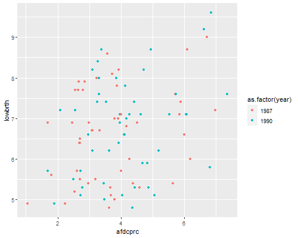

Here's an interesting example where fixed-effects gives a very different answer from OLS and random-effects models. The data come from Wooldridge's text and concern state-level data on the percentage of births classified as low birth weight and the percentage of the population in the AFDC welfare program in 1987 and 1990. The data are available from the Stata website.
> library(foreign)
> lbw <- read.dta("http://www.stata.com/data/jwooldridge/eacsap/lowbirth.dta")
Here's a regression of low birth weight on AFDC with a dummy for 1990 (time trends) and controls for log physicians per capita, log beds per capita, log per capita income, and log population.
> ols <- lm(lowbrth ~ d90 + afdcprc + lphypc + lbedspc + lpcinc + lpopul, data = lbw)
> summary(ols)
Call:
lm(formula = lowbrth ~ d90 + afdcprc + lphypc + lbedspc + lpcinc +
lpopul, data = lbw)
Residuals:
Min 1Q Median 3Q Max
-1.7958 -0.7914 -0.1507 0.8642 2.0121
Coefficients:
Estimate Std. Error t value Pr(>|t|)
(Intercept) 26.57786 7.15802 3.713 0.000349 ***
d90 0.57971 0.27612 2.099 0.038484 *
afdcprc 0.09559 0.09218 1.037 0.302413
lphypc 0.30806 0.71546 0.431 0.667768
lbedspc 0.27900 0.51303 0.544 0.587854
lpcinc -2.49469 0.97830 -2.550 0.012407 *
lpopul 0.73928 0.70232 1.053 0.295237
---
Signif. codes: 0 ‘***‘ 0.001 ‘**‘ 0.01 ‘*‘ 0.05 ‘.‘ 0.1 ‘ ‘ 1
Residual standard error: 1.041 on 93 degrees of freedom
Multiple R-squared: 0.2509, Adjusted R-squared: 0.2026
F-statistic: 5.191 on 6 and 93 DF, p-value: 0.0001205
It seems as if AFDC has a pernicious effect on low birth weight: each percent in AFDC is associated with an extra 1/10-th of one percent with low birth weight. A scatterplot shows a positive correlation:
> library(ggplot2)
> ggplot(lbw, aes(afdcprc, lowbrth, color=as.factor(year))) + geom_point()
> ggsave("afdc1r.png", width = 500/72, height = 400/72, dpi = 72)

Low Birth Weight and Percent with AFDC
Fitting a random-effects model improves things a bit.
> library(lme4)
> lbw$stateabb <- as.factor(lbw$stateabb)
> re <- lmer(lowbrth ~ d90 + afdcprc + lphypc + lbedspc + lpcinc + lpopul +
+ (1 | stateabb), REML = FALSE, data=lbw)
> summary(re, corr = FALSE)
Linear mixed model fit by maximum likelihood ['lmerMod']
Formula: lowbrth ~ d90 + afdcprc + lphypc + lbedspc + lpcinc + lpopul +
(1 | stateabb)
Data: lbw
AIC BIC logLik deviance df.resid
177.5 200.9 -79.7 159.5 91
Scaled residuals:
Min 1Q Median 3Q Max
-2.09964 -0.48600 0.05563 0.42811 2.35192
Random effects:
Groups Name Variance Std.Dev.
stateabb (Intercept) 1.03585 1.0178
Residual 0.03941 0.1985
Number of obs: 100, groups: stateabb, 50
Fixed effects:
Estimate Std. Error t value
(Intercept) 20.12827 7.76345 2.593
d90 0.50678 0.18374 2.758
afdcprc -0.08236 0.07788 -1.058
lphypc 0.29263 0.82938 0.353
lbedspc 0.42912 0.50881 0.843
lpcinc -1.68180 0.95425 -1.762
lpopul 0.74900 0.80042 0.936
> v <- VarCorr(re); v
Groups Name Std.Dev.
stateabb (Intercept) 1.01777
Residual 0.19853
> s2u <- as.numeric(v)
> s2e <- sigma(re)^2
> s2u/(s2u + s2e) # icc
[1] 0.9633458
The effect of AFDC is now positive but not significant The intra-state correlation over the two years is a remarkable 0.96; persistent state characteristics account for 96% of the variation in the percent with low birth weight after controlling for AFDC participation and all other variables.
To fit a fixed-effects model we use the plm() function
> library(plm)
> fe <- plm(lowbrth ~ d90 + afdcprc + lphypc + lbedspc + lpcinc + lpopul,
+ data=lbw, index = "stateabb", method = "within")
> summary(fe)
Oneway (individual) effect Within Model
Call:
plm(formula = lowbrth ~ d90 + afdcprc + lphypc + lbedspc + lpcinc +
lpopul, data = lbw, index = "stateabb", method = "within")
Balanced Panel: n=50, T=2, N=100
Residuals :
Min. 1st Qu. Median 3rd Qu. Max.
-0.2880 -0.0782 0.0000 0.0782 0.2880
Coefficients :
Estimate Std. Error t-value Pr(>|t|)
d90 0.106016 0.309066 0.3430 0.73322
afdcprc -0.176076 0.090373 -1.9483 0.05777 .
lphypc 5.894509 2.816689 2.0927 0.04218 *
lbedspc -1.576195 0.885211 -1.7806 0.08189 .
lpcinc -0.845527 1.356773 -0.6232 0.53638
lpopul 3.441116 2.872175 1.1981 0.23730
---
Signif. codes: 0 ‘***’ 0.001 ‘**’ 0.01 ‘*’ 0.05 ‘.’ 0.1 ‘ ’ 1
Total Sum of Squares: 2.435
Residual Sum of Squares: 1.5001
R-Squared: 0.38393
Adj. R-Squared: 0.16893
F-statistic: 4.57005 on 6 and 44 DF, p-value: 0.0011004
Now every percent increase in AFDC is associated with a decline of almost 2/10-th of a percentage point in low birth weight. The coefficient of log physicians per capita is highly suspect; this is due to high correlation with the other predictors, most notably the log of population. In fact once we have state fixed effects we don't really need the other controls:
> fe2 <- plm(lowbrth ~ d90 + afdcprc,
+ data=lbw, index = "stateabb", method = "within")
> summary(fe2)
Oneway (individual) effect Within Model
Call:
plm(formula = lowbrth ~ d90 + afdcprc, data = lbw, index = "stateabb",
method = "within")
Balanced Panel: n=50, T=2, N=100
Residuals :
Min. 1st Qu. Median 3rd Qu. Max.
-0.3620 -0.0824 0.0000 0.0824 0.3620
Coefficients :
Estimate Std. Error t-value Pr(>|t|)
d90 0.212474 0.054238 3.9175 0.0002828 ***
afdcprc -0.168598 0.090799 -1.8568 0.0694771 .
---
Signif. codes: 0 ‘***’ 0.001 ‘**’ 0.01 ‘*’ 0.05 ‘.’ 0.1 ‘ ’ 1
Total Sum of Squares: 2.435
Residual Sum of Squares: 1.8015
R-Squared: 0.26016
Adj. R-Squared: 0.12488
F-statistic: 8.43965 on 2 and 48 DF, p-value: 0.00072317
One way to see what's going on is to compute and plot differences in the percent with low birth weight and in the percent with AFDC
> y90 <- filter(lbw, year == 1990)
> y87 <- filter(lbw, year == 1987)
> lbwd <- data.frame( lowbrthd = y90$lowbrth - y87$lowbrth,
+ afdcd = y90$afdcprc - y87$afdcprc)
> ggplot(lbwd, aes(afdcd, lowbrthd)) + geom_point() + stat_smooth(method="lm")
> ggsave("afdc2r.png", width = 500/72, height = 400/72, dpi = 72)
Change in Low Birth Weight and in AFDC
Let us verify that we get exactly the same result using regression on the differences. The constant is the coefficient of d90' and the slope is the coefficient ofafdcd`
> fe_diff <- lm(lowbrthd ~ afdcd, data = lbwd)
> summary(fe_diff)
Call:
lm(formula = lowbrthd ~ afdcd, data = lbwd)
Residuals:
Min 1Q Median 3Q Max
-0.52669 -0.17226 -0.05066 0.15256 0.72409
Coefficients:
Estimate Std. Error t value Pr(>|t|)
(Intercept) 0.21247 0.05424 3.917 0.000283 ***
afdcd -0.16860 0.09080 -1.857 0.069477 .
---
Signif. codes: 0 ‘***’ 0.001 ‘**’ 0.01 ‘*’ 0.05 ‘.’ 0.1 ‘ ’ 1
Residual standard error: 0.274 on 48 degrees of freedom
Multiple R-squared: 0.06702, Adjusted R-squared: 0.04758
F-statistic: 3.448 on 1 and 48 DF, p-value: 0.06948
Finally we verify that we get the same results again using state dummies
> fe_dummy <- lm(lowbrth ~ d90 + afdcprc + stateabb, data = lbw)
> summary(fe_dummy)$coefficients[1:3,]
Estimate Std. Error t value Pr(>|t|)
(Intercept) 5.3672779 0.37054239 14.484923 3.804546e-19
d90 0.2124736 0.05423772 3.917451 2.827621e-04
afdcprc -0.1685980 0.09079865 -1.856834 6.947714e-02
(I just omitted from the listing the estimates for the state dummies.)